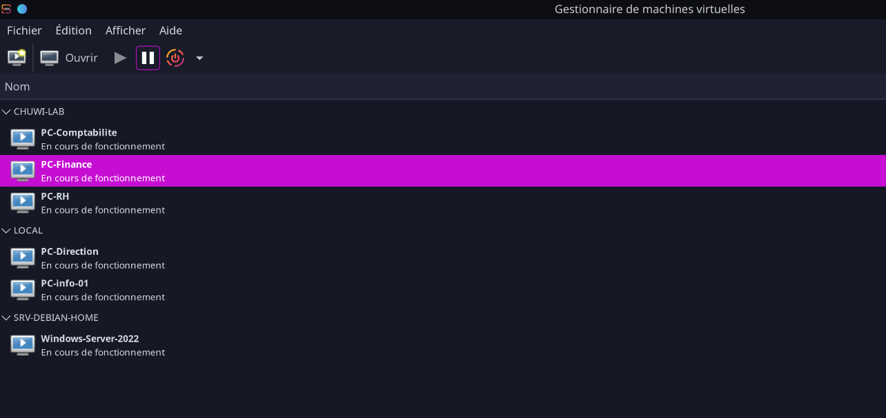
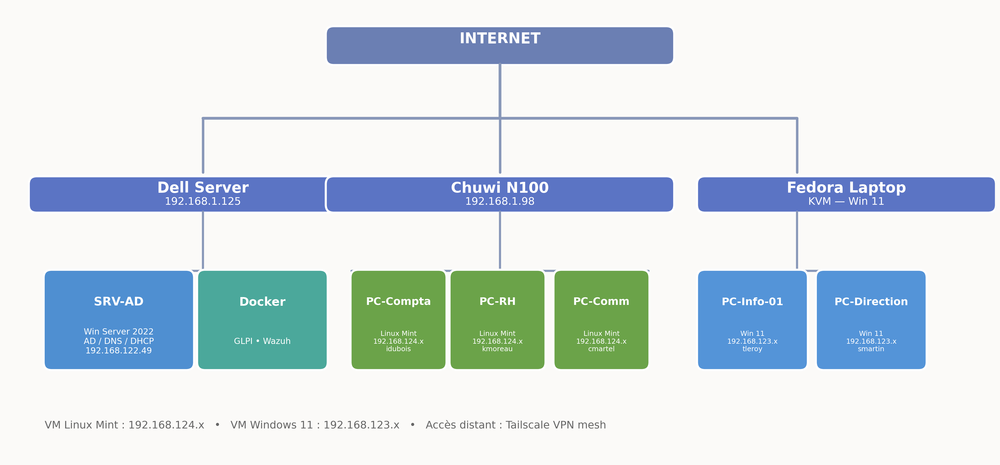
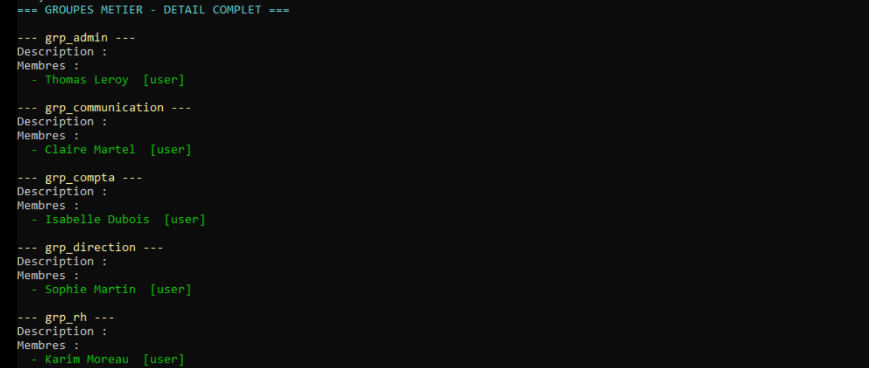
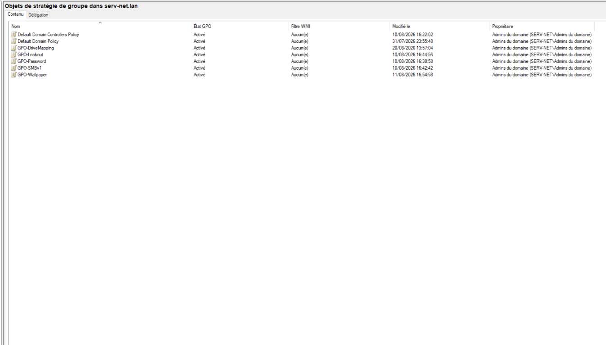
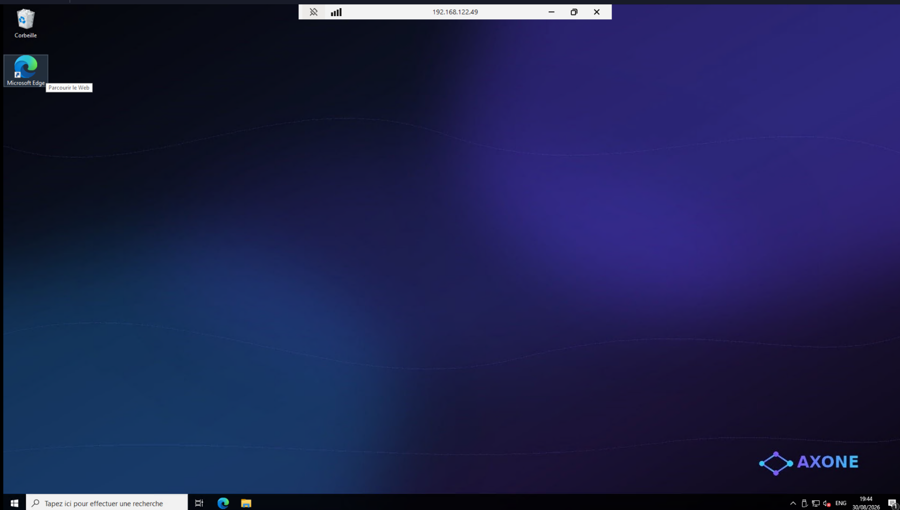
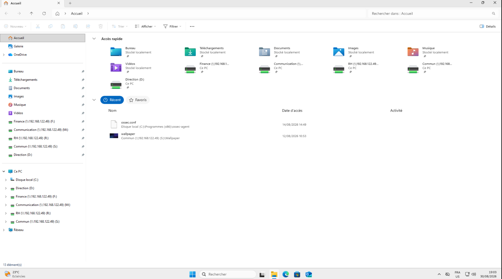
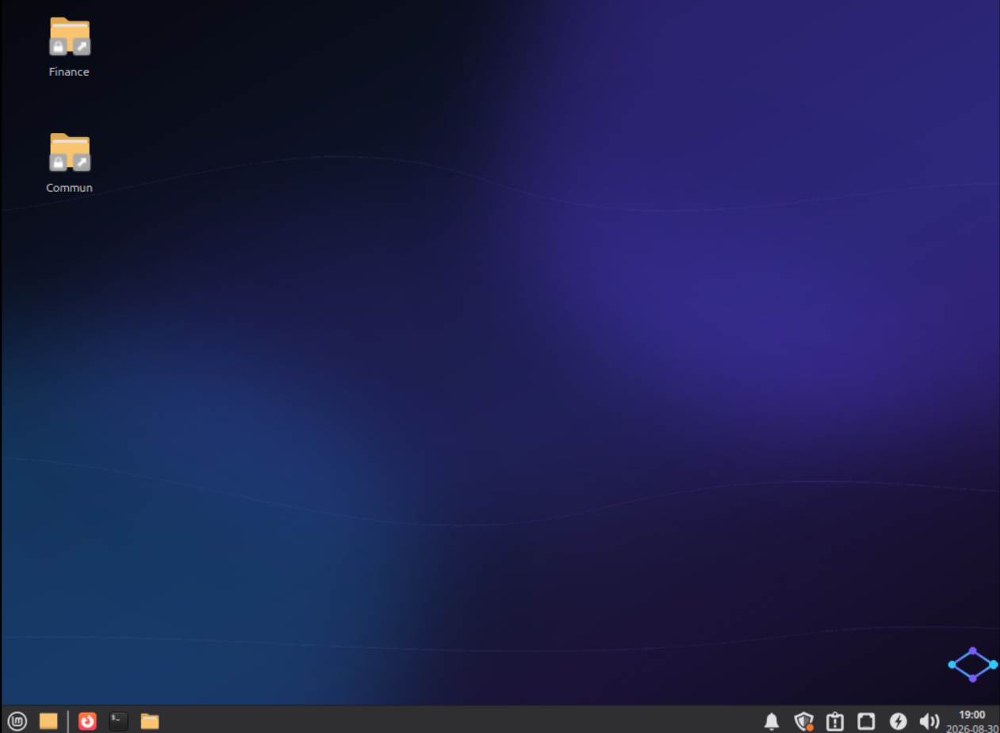
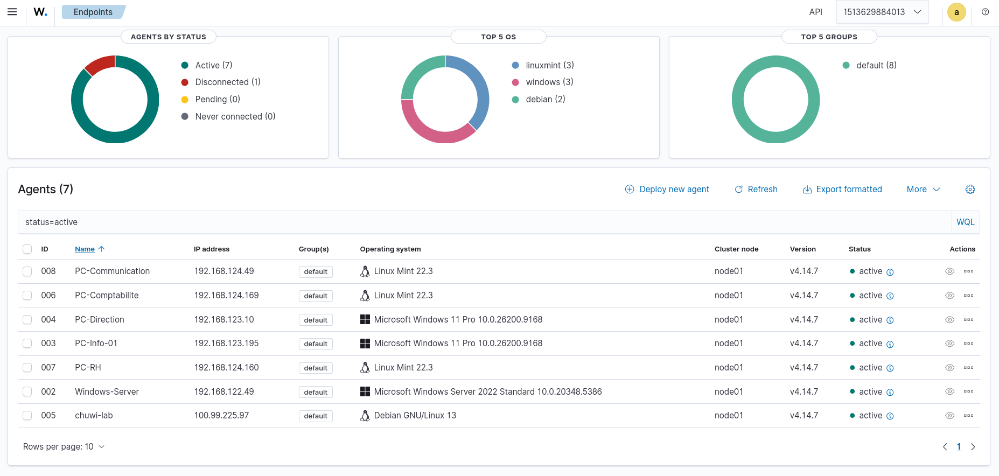

Contexte : PME fictive “Axone” — infogérance pour collectivités. Besoin d’une infrastructure centralisée avec parc hétérogène.
Ce qui a été réalisé : - Domaine Active
Directory serv-net.lan (Windows Server 2022) — AD,
DNS, DHCP - 5 postes joints au domaine : 3 Linux Mint
22 + 2 Windows 11 - GPO : politique de mot de passe,
verrouillage, désactivation SMBv1, fond d’écran, mappage lecteurs -
Partages cloisonnés par groupes AD (Finance, RH,
Communication, Direction, Commun) - Supervision : Wazuh
(SIEM, 7 agents) + GLPI (inventaire multi-entités) -
Automatisation : Ansible (déploiement de configuration
Linux) - Réseau : 3 sous-réseaux libvirt, VPN
Tailscale, NAT
Matériel : Dell OptiPlex (serveur, 24 Go) · Chuwi N100 (hôte Linux, 8 Go) · Fedora Laptop (hôte Windows, 32 Go)

Vue des VM’s depuis le Gestionnaire Linux🌐 Réseau et accès distant multi-sites
L’infrastructure est répartie sur 3 sites (domicile dirigeant, open space, télétravail), interconnectés via un VPN mesh Tailscale.
Architecture réseau :
- Réseau LAN :
192.168.1.0/24— Dell et Chuwi (réseau domestique) - Sous-réseaux libvirt isolés :
- Dell :
192.168.122.0/24(contient SRV-AD, le contrôleur de domaine) - Chuwi :
192.168.124.0/24(contient les 3 postes Linux Mint) - Fedora :
192.168.123.0/24(contient les 2 postes Windows 11)
- Dell :
- VPN mesh Tailscale : accès distant chiffré entre les sites, sans exposer de ports sur Internet
- Subnet routing : le serveur Dell expose son réseau libvirt (192.168.122.0/24) via Tailscale pour que les postes distants joignent le contrôleur de domaine
Pourquoi cette architecture ?
Le serveur étant hébergé au domicile du dirigeant (pas de local technique), les postes de l’open space et du télétravail doivent accéder au contrôleur de domaine à distance. Tailscale permet un VPN sécurisé sans configuration de la box (pas d’IP fixe, pas d’ouverture de ports).

📊 Vue d’ensemble du parc
| Machine | OS | Rôle | Supervision |
|---|---|---|---|
| SRV-AD | Windows Server 2022 | AD, DNS, DHCP | Wazuh + GLPI |
| PC-Comptabilite | Linux Mint 22 | Comptabilité | Wazuh + GLPI |
| PC-RH | Linux Mint 22 | RH | Wazuh + GLPI |
| PC-Communication | Linux Mint 22 | Communication | Wazuh + GLPI |
| PC-Info-01 | Windows 11 | Informatique | Wazuh + GLPI |
| PC-Direction | Windows 11 | Direction | Wazuh + GLPI |
🗂 Active Directory — structure et stratégies
Unités d’organisation : chaque service a son OU dédiée (Comptabilité, RH, Direction, Communication, Informatique, Serveurs) pour appliquer des stratégies différenciées.

Stratégies de groupe (GPO) :
| GPO | Effet |
|---|---|
| GPO-Password | Mot de passe 12 car., complexité, expiration 90j |
| GPO-Lockout | Verrouillage après 5 tentatives |
| GPO-SMBv1 | Désactivation SMBv1 |
| GPO-Wallpaper | Fond d’écran Axone |
| GPO-DriveMapping | Mappage lecteurs réseau |

Accès distant admin (RDP) :

📁 Partages de fichiers et cloisonnement
Les données sont cloisonnées par service via des partages SMB sur le serveur, accessibles selon les groupes AD.
| Partage | Accès (groupes AD) | Contenu |
|---|---|---|
Finance |
grp_compta, grp_direction | Données comptables |
RH |
grp_rh, grp_direction | Données RH (paie, contrats) |
Communication |
grp_communication, grp_direction | Communication interne |
Commun |
Utilisateurs du domaine | Documents partagés |
Direction |
grp_direction | Direction |

Vue des lecteurs réseau mappés sur le poste Direction Windows 11 avec accès total
Vue des partages montés sur un poste Linux Mint (dossiers dans le réseau)🛡 Supervision SIEM — Wazuh

- SIEM déployé en Docker sur le serveur
- 7 agents déployés sur l’ensemble du parc
- Étude de cas : 25 vulnérabilités Critical détectées, analysées et priorisées
- Cycle documenté : Détection → Analyse → Traitement → Vérification
📋 Gestion de parc — GLPI
- Inventaire automatisé des postes (glpi-agent déployé via Ansible)
- Entité dédiée “Axone” pour cloisonner le parc
- Administrateur délégué (droits limités à l’entité)
⚙️ Automatisation — Ansible
Gestion centralisée de la configuration des postes Linux Mint via Ansible (depuis le Chuwi, controller).
| Playbook | Rôle |
|---|---|
wallpaper.yml |
Déploiement du fond d’écran Axone |
wazuh-agent.yml |
Déploiement des agents SIEM |
maj-auto.yml |
MAJ de sécurité automatiques au boot |
glpi-agent.yml |
Déploiement des agents d’inventaire GLPI |
dns-fix.yml |
Correctif de résolution DNS |
Ansible est l’équivalent des GPO pour le parc Linux : déploiement centralisé, reproductible, versionné.
🔄 Mises à jour automatiques
Chaque machine applique les mises à jour de sécurité automatiquement, avec traçabilité :
| Machine | Méthode |
|---|---|
| Dell | unattended-upgrades (sécurité), timer 01:00 |
| Chuwi | Service systemd au boot |
| 3 Mint | Service systemd au boot (déployé via Ansible) |
Les logs de MAJ sont tracés dans
/var/log/maj-auto.log.